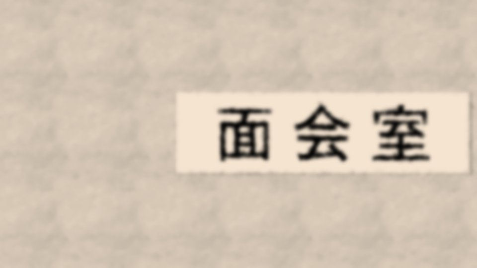
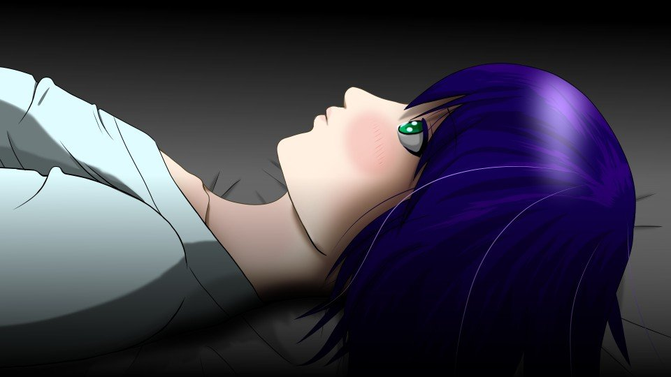

Script 00002478
I had a feeling he knew something.
I am by no means uninvolved, either.
So today, I am going to find out.
There will be an attendant present, I suppose, but being overheard hardly matters at this point.
I am by no means uninvolved, either.
So today, I am going to find out.
There will be an attendant present, I suppose, but being overheard hardly matters at this point.
A thick acrylic panel, like the ones you see on TV.
On the other side of it is my family.
Today, I have to ask this family.
What happened back then, and what is about to happen now.
On the other side of it is my family.
Today, I have to ask this family.
What happened back then, and what is about to happen now.
"Mm... Dad. It's been a while."
"............"
"Mm... I brought you some things."
"............"
"............"
"Mm... I brought you some things."
"............"
Dad kept his head down the whole time.
His eyes were vacant, not quite focused on anything.
His body swayed slowly back and forth.
That, probably, is how a drug addict behaves.
His eyes were vacant, not quite focused on anything.
His body swayed slowly back and forth.
That, probably, is how a drug addict behaves.
I had heard from Dad's lawyer that his behavior was getting stranger by the day.
Whether it was stress from being arrested or a mental illness was not clear.
From what I had heard, Dad had used Droga.
So I had expected a reaction like a stimulant drug's to show up, but―
Whether it was stress from being arrested or a mental illness was not clear.
From what I had heard, Dad had used Droga.
So I had expected a reaction like a stimulant drug's to show up, but―
However, according to the test results, nothing of the kind was detected.
I understand. This is being covered up, blatantly.
Dad using Droga is, officially, an extremely awkward matter.
The incident in Arata where a great many people were arrested―the fact that it has not been reported says as much, too.
I understand. This is being covered up, blatantly.
Dad using Droga is, officially, an extremely awkward matter.
The incident in Arata where a great many people were arrested―the fact that it has not been reported says as much, too.
So I was surprised that a visit like this was allowed today.
There was a condition attached, though.
No talking about the incident―that was the condition for the visit the lawyer passed on to me.
It depended, too, on how the attendant sitting in would judge things, but there was no telling how much information I could draw out of Dad.
There was a condition attached, though.
No talking about the incident―that was the condition for the visit the lawyer passed on to me.
It depended, too, on how the attendant sitting in would judge things, but there was no telling how much information I could draw out of Dad.
"Mm... Grandma passed away."
"Mom...?"
"Mm... A heart attack..."
"I see..."
"Mom...?"
"Mm... A heart attack..."
"I see..."
Even on hearing of his mother's death, he went on swaying back and forth as before.
He seemed somewhat surprised, but did not look as if it had really sunk in.
He seemed somewhat surprised, but did not look as if it had really sunk in.
"Mm... And...
Natsumi-chan died too."
"Huh?"
And this time, he showed blatant surprise.
The swaying stopped, and he looked up with a start.
"Huh?"
And this time, he showed blatant surprise.
The swaying stopped, and he looked up with a start.
"How..."
"Mm... Haruka did it..."
"Mm... Haruka did it..."
"Why!
Why!?"
"Hey, stop that! I'll end the visit!"
At once the attendant took hold of Dad and stopped him.
Then, little by little, the strength drained from Dad's body.
And once again, he sank limply into the chair.
"Hey, stop that! I'll end the visit!"
At once the attendant took hold of Dad and stopped him.
Then, little by little, the strength drained from Dad's body.
And once again, he sank limply into the chair.
"Haruka-chan... did... Natsumi-chan...?"
"Mm... Yes..."
At that, this time he clawed furiously at his head.
Just as I thought, Dad knows.
Why Haruka stabbed Natsumi-chan to death.
"Mm... Yes..."
At that, this time he clawed furiously at his head.
Just as I thought, Dad knows.
Why Haruka stabbed Natsumi-chan to death.
"Mm... Haruka's been unconscious ever since, from the shock."
"Damn...!"
Judging by the attendant's reaction, he seemed interested in what we were saying, but showed no sign of stopping the visit.
He has been told we must not talk about the incident, but he probably cannot tell that Natsumi-chan's death has anything to do with that incident.
"Damn...!"
Judging by the attendant's reaction, he seemed interested in what we were saying, but showed no sign of stopping the visit.
He has been told we must not talk about the incident, but he probably cannot tell that Natsumi-chan's death has anything to do with that incident.
"Mm... Dad, don't you know something?"
"............ Damn...! You monster...! You monster...!"
"Hey, you okay?"
The attendant put a hand on Dad's back and spoke to him.
But Dad went on muttering to himself, too low to make out, and began swaying again.
"............ Damn...! You monster...! You monster...!"
"Hey, you okay?"
The attendant put a hand on Dad's back and spoke to him.
But Dad went on muttering to himself, too low to make out, and began swaying again.
Eventually, when Dad's swaying stopped, the attendant quietly stepped away.
At the same time,
"Five minutes left,"
he announced.
At the same time,
"Five minutes left,"
he announced.
"Mm... Dad, do you know something?"
"Falsificaso... use it..."
"Huh?"
"All right, that's it. Visiting time is over."
"Falsificaso... use it..."
"Huh?"
"All right, that's it. Visiting time is over."
"Mm... Please wait! It hasn't been five minutes yet!"
"We're done for today. Come on, on your feet."
"Mm... No..."
The attendant ignored me and tried to take hold of Dad.
"We're done for today. Come on, on your feet."
"Mm... No..."
The attendant ignored me and tried to take hold of Dad.
"Chigaya! Kill the goddess!
Th-th-the goddess...!
Agagaga...!
Praise her...!"
"Stop it, Niimura! Get back!"
"Stop it, Niimura! Get back!"
"The goddess is a great being!
Praise her!
Kill!
Kill them all!
Kill the goddess!
Praise her!"
Then the door on my side opened, and two more attendants came in.
Then the door on my side opened, and two more attendants came in.
"That's the end. Please leave the room."
"Mm... But!"
"If you keep this up, you will be taken into custody."
"Mm... Dad!"
Like Dad, I too was seized and dragged out of the room.
"Mm... But!"
"If you keep this up, you will be taken into custody."
"Mm... Dad!"
Like Dad, I too was seized and dragged out of the room.

"Haruka-chan was done in by the goddess's plan!
Kill!
Praise her!
The Goddess is great...!"
Dad's shouts came through the door.
"Chigaya Niimura-san, please never speak of what happened today. This is an order from the National Police Agency."
"Mm... The National Police Agency...!"
Dad's shouts came through the door.
"Chigaya Niimura-san, please never speak of what happened today. This is an order from the National Police Agency."
"Mm... The National Police Agency...!"
But I got no answer at all, and was thrown straight out of the detention center.
What was Dad trying to say?
What is the Goddess?
I... What can I do?
What was Dad trying to say?
What is the Goddess?
I... What can I do?

It was a time I did not want.
Days passed after I saw Dad, then months.
The Arata settlement was closed, and I lost my hometown.
Shirozaki-san went to stay with a friend in Iizawa City, and Kana was left in Auntie's care.
Days passed after I saw Dad, then months.
The Arata settlement was closed, and I lost my hometown.
Shirozaki-san went to stay with a friend in Iizawa City, and Kana was left in Auntie's care.
I go on living in Tokyo as before.
For some reason, the state suddenly granted me a generous scholarship.
I go to university, work part-time, go to mixers too.
No, I have no choice but to live this way.
For some reason, the state suddenly granted me a generous scholarship.
I go to university, work part-time, go to mixers too.
No, I have no choice but to live this way.
I grew up in Arata.
So I am sensitive to the presence of people and animals.
If someone is watching me, I can tell right away, even when an ordinary person could not.
So I am sensitive to the presence of people and animals.
If someone is watching me, I can tell right away, even when an ordinary person could not.
Yes, ever since I saw Dad, I have been watched the whole time.
I cannot tell whether it is someone from the National Police Agency, or someone connected to the one Dad called 'the Goddess.'
My freedom has been taken from me.
I am forced into an extremely unfree life: living normally, as before.
I cannot tell whether it is someone from the National Police Agency, or someone connected to the one Dad called 'the Goddess.'
My freedom has been taken from me.
I am forced into an extremely unfree life: living normally, as before.
I have no way of using falsificaso as Dad told me to, either.
To begin with, I do not even know what using falsificaso is supposed to mean.
I cannot look into the storehouse's books in Arata, either.
Even if I try to contact Goto-chan, there is no telling where eyes may be watching.
To begin with, I do not even know what using falsificaso is supposed to mean.
I cannot look into the storehouse's books in Arata, either.
Even if I try to contact Goto-chan, there is no telling where eyes may be watching.
All I can do is―live normally.
I can only go on as always, forever, unfree.
I can only go on as always, forever, unfree.

But that life comes to an abrupt end.
On April 8, Shiyo 801, Haruka woke up.
With that, things began to move again, anew, and in a big way.
Or so they would have―
On April 8, Shiyo 801, Haruka woke up.
With that, things began to move again, anew, and in a big way.
Or so they would have―
but that is a story of―another world.